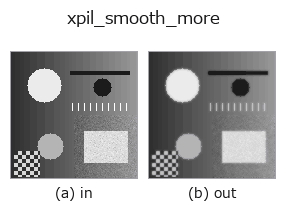

smoothing op• Datenarten: image → image
• Aufruf: fullseye.apply(img, "xpil_smooth_more", a=0.5, b=0.5) (das 2-D-Modell ist ein Bild plus zwei skalare Regler a,b∈[0,1])

*Die Abbildung ist die tatsächliche Ausgabe auf einer synthetischen 128×128-Eingabe. Links Eingabe, rechts Ausgabe. Punktwolken als Draufsicht-Streudiagramm (Helligkeit = z), 1-D-Reihen als Linie, Volumen als Maximum-Projektion entlang z, Videos als mittleres Bild, komplexe Bilder als Betrag; Rückgabewerte, die kein Bild ergeben, werden als Werte gezeigt.*
*Regler a ändert die Ausgabe nicht (gemessen: identisch bei 0,1 / 0,5 / 0,9).*
*Regler b ändert die Ausgabe nicht (gemessen: identisch bei 0,1 / 0,5 / 0,9).*
Auf anderen Bildern (synthetische Szene / Foto / Münzen. Obere Reihe: Eingaben, untere Reihe: deren Ausgaben. Regler auf Standard):
▸ xpil_smooth_more: andere Eingaben (Doku-Website)
*Die 4. Spalte ist eine Farb-Eingabe (H,W,3). Dieser Op verarbeitet Farbe, ohne Kanäle zu vermischen (er faltet den Farbkanal nicht als dritte Raumachse).*
Pillows Glättungsfilter (starke Variante). Verwischt stärker als SMOOTH, unter Verwendung des festen Kernels von PIL.ImageFilter.SMOOTH_MORE.
a, b werden nicht verwendet (fester Kernel).
Der Kernel ist ein gewichtetes 5x5-Mittel (Zentrum 44, seine 8 Nachbarn 5, die äußersten 16 Pixel 1, geteilt durch die Summe 100). Da das Zentrumsgewicht groß ist, ist die Unschärfe schwächer als bei einem gleichförmigen Mittel derselben Größe 5x5; ein Impuls verteilt sich nur auf etwa 44% im Zentrum + je 5% auf die 8 Nachbarpixel (gemessen: Impuls 255 → Zentrum 112, Nachbarn 13, äußerer Rand 0). Wirkt breiter als das 3x3-SMOOTH (Zentrum 5, Nachbarn 1, Summe 13).
Die Eingabe wird auf [0,1] geclippt und durch Abschneiden von *255 in ein 8-Bit-L-Bild umgewandelt, die Ausgabe mit /255 zurückgerechnet (dabei entsteht eine Quantisierung von 1/255). Die äußersten 2 Pixel des Bildes filtert Pillow nicht; sie behalten ihre Eingabewerte. Ein Bild der Größe 0 wird mit ValueError abgewiesen und fällt fail-soft auf die geclippte Eingabe zurück (im Register vermerkt). Wer eine variable Unschärfestärke möchte, nimmt gaussian oder median. Zum Entfernen von Rauschen vor einer Kantenerkennung (xpil_contour /xpil_find_edges) oder threshold.
• Leitfaden zur Familie gallery2d_smoothing_rank
• Katalog der Beispieldaten (Download-URLs / Lizenzen) — 2-D nutzt skimage.data (BSD/Public Domain) plus synthetische Bilder, 3-D nennt Download-URLs echter Datenquellen (Stanford, PDS, …).
• Herkunft und Literatur der Operatoren — die Quellen der Forschung/Verfahren, auf denen diese Operatorfamilie beruht.
• Der kanonische Algorithmus (Autor, Jahr) und seine Anwendungen stehen im Familienleitfaden oben.
Das Programm unten ist nachweislich lauffähig (gleiche Eingabe wie die Abbildung). In der Studio-Hilfe wird dieser Block zu Schaltflächen, die es sofort laden und ausführen.
xpil_smooth_more 0.35 0.50
▸ Diese Pipeline laden · Laden & ausführen
• gallery2d_smoothing_rank — py -3.11 examples/gallery2d_smoothing_rank.py
image als Eingabe)identity · gaussian · mean_box · bilateral · unsharp · median · min_filter · max_filter
smoothing)gaussian · mean_box · bilateral · unsharp · sk_tv · sk_wavelet · sk_rolling_ball · sk_nlm
*Provenance: ops.py — 2D Operator-Registry. Diese Notiz wird von tools/opdocs.py md erzeugt (nicht von Hand bearbeiten).*
© 2026 Kazufumi Furuse — Fullseye operator documentation. Licensed under Apache-2.0.